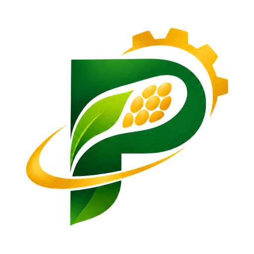

Better Food Choices
Encouraging greater access to familiar, satisfying and convenient snack alternatives such as roasted and boiled corn.
Our goal is to support greater choice in everyday food preparation and consumption.
Parusavedhi was founded on the belief that business and technology can contribute positively to everyday life.
Our purpose is rooted in making nutritious, affordable and convenient food choices more accessible while exploring meaningful opportunities for entrepreneurship and community participation.
We believe that responsible innovation begins by recognizing human needs and working towards practical solutions.
Even if an innovation makes the smallest meaningful difference in an ordinary person's everyday life, that difference is worth pursuing.
This belief continues to shape our purpose, our approach to innovation and our aspirations for the future.
An expression of our founding philosophy, not a quantified or measured impact statistic.
The ways in which we aspire to contribute to individuals, businesses and communities.
Encouraging greater access to familiar, satisfying and convenient snack alternatives such as roasted and boiled corn.
Our goal is to support greater choice in everyday food preparation and consumption.
Recognizing the importance of affordability and convenience in everyday food decisions.
We aspire to develop solutions that respond to the needs of people from diverse backgrounds.
Exploring opportunities for independent vendors and aspiring entrepreneurs to establish or expand food-based businesses.
We view local food vendors as potential partners in creating accessible food experiences.
Welcoming opportunities to work with community enterprises, women's self-help groups and organizations supporting livelihoods.
Our ambition is to contribute towards meaningful and inclusive entrepreneurial opportunities.
Applying technology and engineering to practical challenges while considering consumer needs, product quality and responsible use.
We believe innovation should serve a meaningful purpose.
Exploring electrically operated alternatives to conventional fuel-based food preparation methods.
We aspire to consider resource efficiency and responsible engineering in product development.

Traditional food vendors play an important role in making familiar food experiences accessible to local communities.
Rather than viewing these vendors as competitors, we see them as potential participants in our journey towards purposeful food technology innovation.
Through practical equipment and business discussions, we seek to explore opportunities that can support independent livelihoods and local entrepreneurship.
Explore Opportunities →We welcome discussions with organizations interested in exploring food-based entrepreneurial and community opportunities.
Exploring equipment-related opportunities with groups supporting economic participation and independent livelihoods.
Welcoming collaborative discussions with organizations focused on community development and entrepreneurship.
Exploring ways to connect practical food technology with local markets and suitable business applications.
As Parusavedhi grows, we aspire to better understand and document the contribution of our products and business activities to the people and communities we serve.
Our future approach to impact reporting may include customer experiences, entrepreneurial opportunities, community participation and verified product performance.
We believe social impact should be communicated responsibly, supported by genuine experiences and documented outcomes rather than unsupported claims.
Connect with Parusavedhi to explore community, entrepreneurial and business collaborations.